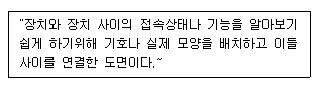
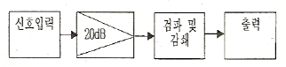
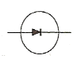
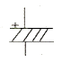
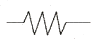
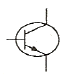
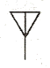
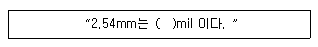

전자캐드기능사 (2012-10-20 기출문제)
1과목: 전기전자공학(대략구분)
1. 어떤 신호 증폭기의 입력전압(V1)의 S/N 비가 90, 출력전압(V2)의 S/N 비가 30 이라면 이 증폭기의 잡음지수는?
- 0.33
- 3
- 3.33
- 2700
(정답률: 67%)

2. BJT와 비교한 FET에 대한 설명으로 옳지 않은 것은?
- 입력임피던스가 높다.
- 잡음특성이 양호하다.
- 이득대역폭 적이 크다.
- 온도변화에 따른 안정성이 높다.
(정답률: 57%)
3. 코일의 성질이 아닌 것은?
- 전류의 변화를 안정시키려고 하는 성질
- 상호유도작용
- 공진하는 성질
- 전류누설작용
(정답률: 67%)
4. 다음 중 N형 반도체를 만드는데 사용되는 불순물의 원소는?
- 인듐(In)
- 비소(As)
- 갈륨(Ga)
- 알루미늄(Al)
(정답률: 83%)
5. 다음 중 유도현상에 생기는 유도 기전력은 자속의 변화를 방해하려는 방향으로 발생하는 법칙은?
- 플레밍의 오른손법칙
- 비오-사바르의 법칙
- 패러데이의 법칙
- 렌쯔의 법칙
(정답률: 64%)
6. 멀티바이브레이터에서 비안정, 단안정, 쌍안정의 구분은 무엇으로 결정되는가?
- 결합회로의 구성
- 전원 전류의 크기
- 전원 전압의 크기
- 바이어스 전압의 크기
(정답률: 74%)
7. 디지털 변조방식이 아닌 것은?
- ASK
- FSK
- PCM
- QAM
(정답률: 59%)
8. 사인파 교류 전류의 최대값이 10[A]이면 반주기 평균값은?
- 10/√2[A]
- 10/π[A]
- 10√2[A]
- 20/π[A]
(정답률: 44%)
9. 평행한 두 전선에 전류를 흘려주면 두 전선 상호 간에 작용하는 전자력과 전선 간격(r)의 관계로 옳은 것은?
- r에 비례한다.
- r2에 비례한다.
- r에 반비례한다.
- r2에 반비례한다.
(정답률: 54%)
10. 트랜지스터(TR)이 EB접합과 CE접합 모두 순방향 바이어스시 트랜지스터(TR)의 동작영역은?
- 포화영역
- 활성영역
- 차단영역
- 역활성영역
(정답률: 54%)
11. 가정용 백열전등에 220[V]의 전압을 가하였더니 50[W]의 전력을 소비했다. 이 전등의 저항 [Ω]은?
- 100[Ω]
- 200[Ω]
- 970[Ω]
- 1250[Ω]
(정답률: 60%)
12. 다음 중 크로스오버 왜곡(Crossover Distortion)이 발생하는 전력증폭기는?
- A급 전력증폭기
- B급 전력증폭기
- AB급 전력증폭기
- C급 전력증폭기
(정답률: 70%)
13. 도체에 전류 i가 흐를 때 도체 주위의 한 점 P에 생기는 자장의 세기는 도선 전류의 각 미소 부분에 생기는 자장의 세기의 합이라는 법칙은?
- 비오-사바르 법칙
- 렌츠의 법칙
- 시타인 메쯔의 법칙
- 주회 적분의 법칙
(정답률: 67%)
14. 어떤 저항에 10[A]의 전류를 흘리면 20[W]의 전력이 소비되었다. 이 저항에 20[A]의 전류를 흘리면 소비전력은 몇 [W] 인가?
- 10[W]
- 20[W]
- 40[W]
- 80[W]
(정답률: 45%)
15. 정류회로에서 직류 출력전압이 100[V]이고, 교류(리플)성분의 전압이 1.2[V]일 때, 맥동률은 몇 [%] 인가?
- 0.9[%]
- 1.0[%]
- 1.2[%]
- 1.5[%]
(정답률: 69%)
2과목: 전자계산기일반(대략구분)
16. 자기 보수화 코드(Self Complement Code)가 아닌 것은?
- Excess-3 Code
- 2421 Code
- 51111 Code
- Gray Code
(정답률: 67%)
17. 객체지향 언어이고 웹상의 응용 프로그램에 알맞게 만들어진 언어는?
- 포트란(FORTRAN)
- C
- 자바(java)
- SQL
(정답률: 70%)
18. 다음 기억장치 중 접근 시간이 빠른 것 부터 순서대로 나열된 것은?
- 레지스터 - 캐시메모리 - 보조기억장치 - 주기억장치
- 캐시메모리 - 레지스터 - 주기억장치 - 보조기억장치
- 레지스터 - 캐시메모리 - 주기억장치 - 보조기억장치
- 캐시메모리 - 주기억장치 - 레지스터 - 보조기억장치
(정답률: 62%)
19. 8진수 2374를 16진수로 변환한 값은?
- 3A2
- 3C2
- 4D2
- 4FC
(정답률: 65%)
20. 8비트로 부호와 절대치 표현 방법에 의해 27과 -27을 표현하면?
- 27 : 00011011, -27 : 10011011
- 27 : 10011011, -27 : 00011011
- 27 : 00011011, -27 : 00011011
- 27 : 10011011, -27 : 10011011
(정답률: 68%)
21. 다음 중 범용레지스터에서 이용하며, 가장 일반적인 주소지정방식은?
- 0-주소지정방식
- 1-주소지정방식
- 2-주소지정방식
- 3-주소지정방식
(정답률: 58%)
22. 다음 중 데이터 전송 명령어에 해당하는 것은?
- MOV
- ADD
- CLR
- JMP
(정답률: 74%)
23. 연산 장치에 대한 설명으로 옳은 것은?
- 계산기에 필요한 명령을 기억한다.
- 연산 작용은 주로 가산기에서 한다.
- 연산은 주로 10진법으로 한다.
- 연산 명령을 해석한다.
(정답률: 59%)
24. 컴퓨터의 중앙처리장치에서 제어장치에 해당하는 것은?
- 기억 레지스터
- 누산기
- 상태 레지스터
- 데이터 레지스터
(정답률: 35%)
25. 다음 중 순서도(flowchart)의 특징이 아닌 것은?
- 프로그램 코딩(coding)의 기초 자료가 된다.
- 프로그램 보관시 자료가 된다.
- 오류 수정(debugging)이 용이하다.
- 사용하는 언어에 따라 기호, 형태도 달라진다.
(정답률: 80%)
26. 다음 논리 회로 중 Fan-out 수가 가장 많은 회로는?
- TTL
- RTL
- DTL
- CMOS
(정답률: 61%)
27. 연산결과가 양수(0) 또는 음수(1), 자리올린(carry), 넘침(over flow)이 발생했는가를 표시하는 레지스터는?
- 상태 레지스터
- 누산기
- 가산기
- 데이터 레지스터
(정답률: 69%)
28. PCB를 제작하기 위한 파일로서 PCB 설계의 모든 정보가 들어있는 파일을 일반적으로 일컫는 것은?
- Gerber 파일
- Print 파일
- BOM DATA 파일
- Report 파일
(정답률: 77%)
29. CAD 시스템에서 도면화를 위한 표준 장치로서, 출력이 도형 형식일 때 정교한 표현을 위해 사용되는 것은?
- 모니터
- 플로터
- 잉크젯 프린터
- 레이저 프린터
(정답률: 64%)
30. 도면이 구비하여야 할 기본요건으로 틀린 것은?
- 대상물의 도형과 함께 필요로 하는 크기, 모양, 자세, 위치의 정보를 포함하여야 한다.
- 대상물의 도형에 따른 크기 모양 등의 정보를 이해하기 쉬운 방법으로 표현하여야 한다.
- 애매한 해석이 생기지 않도록 표면상 명확한 뜻을 가져야 한다.
- 각 기술 분야의 입장에서 가능한 한 좁은 분야에 걸쳐 특이성을 가져야 한다.
(정답률: 81%)
3과목: 전자제도(CAD) 이론(대략구분)
31. PCB 설계에서 부품의 배치방법으로 틀린 것은?
- 부품은 회로도상의 신호 흐름을 따라서 배치한다.
- 커넥터는 PCB의 외곽 쪽에 배피한다.
- 디지털 회로와 아날로그 회로는 분리하지 않고 배치한다.
- 고전압부와 저전압부는 분리하여 배치한다.
(정답률: 81%)
32. 한쪽 방향으로만 전류를 통과시켜 교류를 직류로 바꾸는 소자는?
- 다이오드
- 트랜지스터
- 전해 콘덴서
- 전기장 효과 트랜지스터
(정답률: 67%)
33. 인쇄회로기판 설계시의 고려 사항과 거리가 먼 것은?
- 부품 배치
- 부품 높이와 배열
- 부품의 가격
- 부품 부착 간격
(정답률: 83%)
34. 전기적 접속부위나 빈번한 착탈로 높은 전기적 특성이 요구되는 부위에 부분적으로 실시하는 도금은?
- 아연
- 은
- 금
- 구리
(정답률: 70%)
35. 컴퓨터 정보를 입력시키는 장치 중 도면으로부터 위치좌표를 읽어 들이는데 사용하는 것은?
- 트랙볼
- 태블릿
- 디지타이저
- 이미지스캐너
(정답률: 76%)
36. 국제적으로 통일된 구격의 제정과 실천의 촉진을 위해 설립된 국제 표준화 기구는?
- ISO
- SNV
- BS
- ANSI
(정답률: 86%)
37. 다음 설명과 같은 도면의 명칭은?

- 접속도
- 부품배치도
- 패턴도
- 패널도
(정답률: 59%)
38. 부품의 단자 또는 도체 상호간을 접속하기 위해 구멍 주위에 만든 특정한 도체 부분인 것은?
- 리드
- 납마스크
- 패턴
- 랜드
(정답률: 65%)
39. 전자 CAD로 작업한 파일을 저장할 수 있는 장치는/
- 스캐너
- 모니터
- 마우스
- 하드디스크
(정답률: 85%)
40. 능동소자 중 pnpn 4층 구조로 3개의 pn접합이 애노드(A) 캐소드(K) 게이트(G)등 3개의 전극으로 구성되어 있으며, 조광장치나 전동차의 전력조절 등에 사용되는 소자는?
- 다이오드
- 트랜지스터
- SCR
- FET
(정답률: 56%)
41. 설계자의 의도를 작업자에게 정확히 전달시켜 요구하는 물품을 만들게 하기 위하여 사용되는 도면은?
- 계획도
- 주문도
- 견적도
- 제작도
(정답률: 58%)
42. 2SA562B 트랜지스터의 명칭에서 A의 용도는?
- PNP형 고주파용 TR
- PNP형 저주파용 TR
- NPN형 고주파용 TR
- NPN형 저주파용 TR
(정답률: 74%)
43. PCB의 일반적인 특징 중 틀린 것은?
- 대량 생산의 효과가 높다.
- 오배선의 우려가 없다.
- 대량생산 단가가 높다.
- 소형 경량화에 기여한다.
(정답률: 74%)
44. PCB의 제조 공정 중에서 원하는 부품을 삽입하거나 회로를 연결하는 비아(Via)를 기계적으로 가공하는 고정은?
- 라미네이트
- 노광
- 드릴
- 도금
(정답률: 64%)
45. 표준화 유형 중 기업 또는 공장에서 심의하고 규정하여 기업 또는 공장 내부에서 적용되는 표준은?
- 단체 표준
- 사내 표준
- 국가 표준
- 국제 표준
(정답률: 77%)
46. 다음 그림과 같이 전자 제품의 전체적인 동작이나 기능을 간단한 기호나 직사각형과 문자로 그린 도면의 명칭은?

- 배치도
- 블록도
- 배선도
- 결합도
(정답률: 84%)
47. 다음 전자 부품 중 전해콘덴서의 심벌은?




(정답률: 83%)
48. 회로기판이 움직여야 하는 경우나 부품의 삽입시 회로 기판의 굴곡을 요하는 경우에 유연성이 있어야 하는데 폴리에스테르나 폴리이미드 필름에 동박을 접착한 얇은 필름으로 만든 기판은?
- 세라믹 인쇄회로기판
- 플렉시블 인쇄회로기판
- 유리에폭시 인쇄회로기판
- 콤퍼지트재 인쇄회로기판
(정답률: 77%)
49. 다음과 같은 기호가 뜻하는 것은?

- 스위치
- 퓨즈
- 유도기
- 안테나
(정답률: 75%)
50. 다음은 PCB 설계시 사용되는 단위에 관한 것이다.( ) 안에 알맞은 숫자는?

- 1
- 10
- 100
- 1000
(정답률: 69%)
51. 주문할 사람에게 물품의 내용 및 가격 등을 설명하기 위해 견적서에 첨부하는 도면의 명칭은?
- 주문도
- 승인도
- 견적도
- 설명도
(정답률: 68%)
52. 전자 기기의 패널(pannel)은 장치의 모든 기능을 표현하는 얼굴이다. 설계 제도시 유의 사항으로 틀린 것은?
- 패널 부품은 크기를 고려하여 균형 있게 배치한다.
- 조작상 서로 연관이 있는 요소끼리 근접 배치한다.
- 전원 코드는 전면에 배치한다.
- 조작 빈도가 높은 부품은 패널의 중앙이나 오른쪽에 배치한다.
(정답률: 71%)
53. PCB 판이 평형을 유지하지 못하고, 구부러진 상태를 나타내는 용어는?
- 돌기(bump)
- 트위스터(twist)
- 휨(bow)
- 결각(indedtation)
(정답률: 81%)
54. 부품을 적정한 상태로 동작시키는데 필요한 기존적인 조건을 정격이라 하는데, 다음 중 정격에 속하지 않는 것은?
- 주파수
- 인가전압
- 임피던스
- 사용 장소의 온도, 습도
(정답률: 44%)
55. 인쇄회로기판(PCB)의 설계 시 발열 부품에 대한 대책으로 틀린 것은?
- 일반적으로 내열 온도는 85℃ 이하에서 사용하는 것이 바람직하다.
- 발열 부품은 한 곳에 집중 배치하여, 부분적 영향을 받도록 하는 것이 유리하다.
- 공기의 흐름을 파악하여, 열에 약한 부품은 공기의 유입 부분에, 열에 강한 부품은 출구 쪽에 배치한다.
- 실장 면적은 부품을 PCB에 밀착하여 배치하는 경우에 납땜 시 온도의 영향을 작게 설계하는 것이 요구된다.
(정답률: 72%)
56. 전자캐드로 작성된 도면의 요소를 지우는 기능에 해당하는 것은?
- ZOOM
- SAVE
- DELETE
- EDIT
(정답률: 85%)
57. 전기 회로망에서 전압을 분배하거나 전류의 흐름을 방해하는 역할을 하는 소자는?
- 콘덴서
- 수정 진동자
- 저항
- LED
(정답률: 86%)
58. 전자 CAD를 이용한 설계의 효율성으로 틀린 것은?
- 제품의 신뢰성이 떨어진다.
- 제품의 개발에 필요한 시간을 줄이고, 공정을 간소화 할 수 있어 원가가 절감된다.
- 설계 변경과 시간을 단축할 수 있어 생산성이 향상된다.
- 설계 데이터의 보관이 비교적 용이하다.
(정답률: 82%)
59. CAD 시스템에서 도면 작업에 주로 사용되는 회로 소자의도 기호와 PCB용 패턴 및 문자들을 제공하여 작업의 효율을 향상시키는 것은?
- LIBRARY
- NRTLIST
- RTREELIST
- ANNOTATE
(정답률: 71%)
60. CAD의 특징으로 틀린 것은?
- 시장 경쟁력 감소
- 설계의 능률화
- 제조의 정확성
- 인력의 효율화
(정답률: 83%)